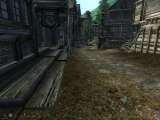
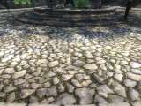
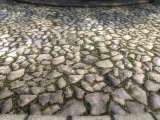
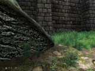
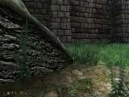
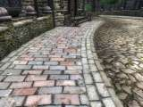
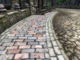

A Mod for Elder Scrolls IV: Oblivion
by blade9722, Qarl, mikal33, and dev_akm
QNMR2 DESCRIPTION
This is a texture replacement mod that acts as an unofficial option pack for Qarl's Texture Pack 2 (QTP2). It is designed to improve performance of QTP2 on some video cards by replacing most of the high-resolution normal maps from QTP2 with dramatically smaller normal maps. Most of the normal maps are reduced to one quarter of their original size, which can significantly help reduce stuttering on 256Mb video cards with almost no loss of quality that you can see in-game.
Where there were previously 300Mb worth of normal maps in QTP2, they are reduced here to about 90Mb uncompressed (QNMR 1.0 is slightly smaller, at 75Mb, so it may still be preferable for some users). This size reduction has proven to be very effective for boosting performance and reducing stuttering for QTP2 users (around +3-5 FPS, maybe more in heavily bogged areas like Castle Domrose and Castle Dunkerlore) with almost no noticeable loss of in-game image quality.
This mod was created using Qarl's original normal maps (and devakm's Skingrad Roof textures). Most of the normal maps were reduced with bicubic sharper resampling in Photoshop, which helps to avoid the ugly blocky compression artifacts that were sometimes visible in QNMR 1.0. Also, some normal maps are left at original size because they did not reduce well.
The other big difference in QNMR 2.0 is that it already includes the correct normal maps for use with Better Tiling for Qarl 1.11, so you don't need the BTSR Normal Maps Reduced option package any more.
SCREENSHOTS
Here's some screenshots of the reduced normal maps compared to Qarl's originals:
|
before  |
after |
|  |  |
|  |  |
|  |  |
The difference is only really noticeable when you are very close up to some objects (you can see it if you look very closely at the shot of the large rock outside Chorral), but as soon as you get more than a few feet away there's no difference at all. This is because none of the mip-maps are altered at all. Even when you are very close, some objects seem virtually unchanged, at least to my eye.
INSTALLATION
This mod requires Qarl's Texture Pack 3, Better Tiling for Qarl 1.11, and Skingrad Roof Textures. It is compatible with Parallaxed Qarl, but is not necessary if you've already installed all of the reduced normal map add-ons and fixes for Parallaxed Qarl. There are only very minor differences between QNMR2 and the reduced normal maps that blade9722 released in Parallaxed Qarl and its add-ons. QNMR2 is mainly intended for people who are not running Parallaxed Qarl Textures and still want the higher-quality reduced normal maps that were released with that mod. If you do want to add it, QNMR2 should be installed after Parallaxed Qarl.
This mod is packaged as an OMOD-ready archive, which means you can either install it manually or quickly create an OMOD for Wrye Bash or Oblivion Mod Manager directly from the included Qarl Normal Maps Reduced directory (omod conversion data is included). See the included OMOD_or_Manual_Install.txt file for details.
As with Qarl's Texture Pack 2 or 3, you must read the included README and follow the instructions exactly or you'll almost certainly have problems. If you're not willing to use the BSA-alteration method of invalidation, then you probably shouldn't use this add-on.
Links to all the other mods required can be found on The Oblivion Texture Overhaul (TOTO) site.
Here is a summary of the install sequence:
- Qarl's Texture Pack 3
- Skingrad Roof Textures
- Better Tiling for Qarl 1.11
- Qarl Normal Maps Reduced 2.0
The point of this sequence is that you'll be installing this mod last so the reduced normal map texture files included here will overwrite Qarl's originals (as well as those included in Skingrad Roof Textures and Better Tiling).
To install manually, unpack the Qarl_Normal_Maps_Reduced2.7z archive and move/copy the textures folder into your \Oblivion\Data\ folder. If you get a prompt asking whether you want to overwrite files/folders, click Yes. If you're unsure about how to do all this, please see the Oblivion Mods FAQ.
ARCHIVE INVALIDATION
Due to a bug in Oblivion, texture replacements such as those included in this mod will not display correctly unless you take some extra steps to force Oblivion to use them. Unfortunately, Oblivion has major problems loading many replacement textures even if you use an ArchiveInvalidation.txt file (which was common practice in the past). This topic is far too complex to explain all the whys, hows, and wherefores here, so we'll stick to simple instructions for known solutions that work well at the moment.
The best solution at the moment is to use one of Timeslip's excellent utility programs: Oblivion Mod Manager (OBMM version 0.7.10 or later) or BSA Patcher. What OBMM and BSA Patcher do is to sidestep the ArchiveInvalidation problem by making Oblivion think it never had a copy of the textures you are replacing.
In other words, these utilities edit your BSA archives so that Oblivion cannot find the original version of files you have replaced, thus forcing it to load the replacements instead of the originals.
Download Oblivion Mod Manager.
OBMM will keep track of which files have been renamed in your BSAs and provides a Remove BSA edits function to rollback any changes it has made to your BSA just in case you don't like the results. You should probably make a backup of your BSA files if you have the space (or a DVD-burner) just in case, although the latest versions of OBMM include a BSA-Uncorrupter utility that can usually fix any BSA corruption problems you might have.
OBMM requires .NET 2.0 to work, so if you can't run .NET 2.0 then you'll need to use BSA Patcher instead.
Assuming you have OBMM 0.7.10 or later installed already, and have already installed this mod, the steps you need to take are as follows:
- Start OBMM.
- Click Utilities.
- Select Archive invalidation.
- Click Directly Edit BSAs.
- Check Textures.
- Check Ignore normal maps.
- Check Generate archiveinvalidation entries on hash collision.
- Click the checkbox for autoupdate on exit and/or click Update Now.
- Close the Archive Invalidation popup (click the red X in the upper-right corner).
- Quit OBMM or click Launch Oblivion.
Here's a screenshot of the exact options to use in OBMM 0.7.11:

You can try different settings if you want, but these are known to work. You do need to make sure to check the box for Generate archiveinvalidation entries on hash collision, since that setting is critical. Using the above settings in OBMM will take care of everything for you.
Download BSA Patcher.
Another solution is Timeslip's BSA Patcher. Unlike OBMM, BSA Patcher is a command-line application, although you can launch it by double-clicking the executable. BSA Patcher doesn't include as many configuration options as OBMM, but it accomplishes the same tasks and it only requires .NET 1.1, which means it will work for anyone who is unwilling or unable to run .NET 2.0. It will also work with mono, which is an open-source version of .NET 1.1.
The latest version of BSA Patcher (as of this writing) uses the BSA alteration code from OBMM 0.7.10 and, like OBMM, it will automatically generate an ArchiveInvalidation.txt file for you containing only the textures that could not be safely renamed in your BSA files. It includes support for several command-line options, but you can safely ignore them.
To use it, place BSAPatch.exe in your \Oblivion\Data\ folder and double-click it once to rename files in your BSA. Run it again to restore them to their original names.
NOTE: If you use either OBMM or BSA Patcher, you should not manually alter your ArchiveInvalidation.txt file. Let one of these programs do it for you. No other solutions are recommended.
GENERAL INFORMATION & HELP
For more information, installation tips, etc., please see the Oblivion Mods FAQ.
CREDITS
Bethesda for an awesome game, Qarl for his incredible Texture Pack 2, and MrWiseman for his excellent texture reduction script (which proved the concept of reduced normal maps would work in QNMR 1.0). Also, we owe a huge debt of gratitude to mikal33 for all the hard work he did on making the Better Tiling for Qarl mod.
COMMON QUESTIONS
Q. I've already followed the TOTO instructions for installing Parallaxed Qarl Textures with the reduced normal maps add-on and fix. Do I still need to install this pack, too?
No. There are only very minor differences between QNMR2 and the reduced normal maps that blade9722 released in Parallaxed Qarl and its add-ons. In fact, most of the files are exactly the same if you've already installed the reduced normals (w3rp) add-on and fix. QNMR2 is mainly intended for people who are not running Parallaxed Qarl Textures and still want the higher-quality reduced normal maps that were released for that mod.
Q. Will the performance difference even be noticeable on a 512MB card?
I have not tested this (since my card is 256Mb), but I'm fairly certain any improvement you'd see with 512Mb would be less dramatic than the improvement I got. Still, several users have reported reduced stuttering on 512Mb cards after installing the reduced normal maps.
Q. Will this mod improve performance for 128MB cards?
Probably not. You'd probably need to also reduce the color maps, in which case Qarl's textures might not be much of an improvement over the vanilla Oblivion textures. Hard to say for sure. You could always give it a try. However, you'd probably have better luck using Wiseman's Reduced Textures. I would think that could give you a big improvement. You could also use his texture reduction script to make a reduced version of all of Qarl's textures rather than just the normal maps.
DOWNLOAD LINKS
devnull.sweetdanger.net (personal server)
Qarl Normal Maps Reduced 2.0
PlanetElderScrolls
Qarl Normal Maps Reduced 2.0
rogepost
Qarl Normal Maps Reduced 2.0
ElricM
Qarl Normal Maps Reduced 2.0
You can also still get QNMR 1.0